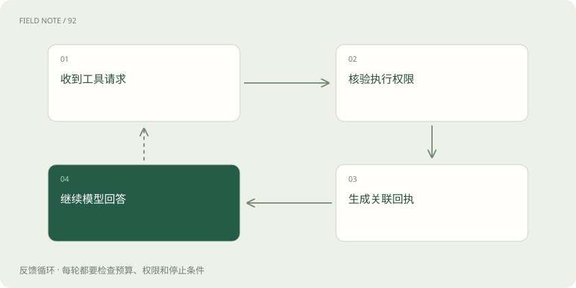
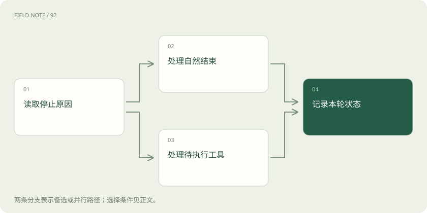

先说这篇在讲什么
让程序调用 Claude，并不只是把网页里的提问搬进代码。程序还要告诉服务本轮有哪些材料、工具是否执行完、回答有没有被截断。如果只把屏幕上出现的第一句话拿走，可能错过真正需要处理的事情。本篇用查询库存的过程，把请求和返回里的重要字段逐一对应到实际工作，让你能读懂一次完整调用。
先看一个具体例子
Claude 请求查询两个仓库，程序核对权限后执行两次查询，把两份结果分别关联到原请求，再让 Claude 汇总。
遇到陌生概念，可以先读
打个比方，帮助理解
这是帮助理解的比方，实际过程以正文说明为准。
一图看懂
先把要求与对话放对位置
API 是程序之间交换请求和结果的约定。Claude 的 Messages API 接收的不只是提问文字，还包括模型选择、身份验证信息、版本头和生成设置。版本头用于说明按哪套接口约定处理请求。不能因为另一个平台也有 messages 字段，就把它的请求原样搬过来。
system 是顶层的系统要求，例如“只依据提供的库存回答”；messages 则主要放 user 和 assistant，也就是用户与模型的对话。这里不能照搬把 system 当作一条消息角色的写法。先分清“本次怎样工作”和“此前说了什么”，再填写内容，后面的工具处理才不会建立在错误的请求结构上。
一条消息可以带好几种材料
content 表示消息内容，但它可以是一串带类型的内容块，并非永远只有一段文字。text 块装可阅读的说明，tool_use 块装让程序执行工具的请求，还可能有相应能力产生的其他类型。纯文字有简写形式，带图片、工具和思考相关材料时则要按具体类型读。
例如返回先说“我来核对仓库”，随后附上查库存请求。前一句只是说明，库存还没查出来。页面可以只展示适合用户阅读的文字，但下一轮继续调用的记录需要保留必要结构。遇到程序暂时不认识的块，应明确保留或报告不支持，不能偷偷删掉，再把余下文字称作完整回答。
模型提出工具请求，程序实际执行
tool_use 里有 id、工具名称和 input，分别说明“这是哪次请求”“想调用什么”“需要哪些参数”。例如工具名是查库存，参数是商品号和仓库号。程序必须先确认这个用户能查该仓库、参数合理，才去实际查询数据库；模型提出请求本身不等于操作已经发生。
执行后，在紧接着的 user 消息内放 tool_result，并用 tool_use_id 指回原来的 id。这里没有额外通用的 tool 角色。多个请求需要各自对应的结果，不要在请求和回执之间插入无关对话。工具失败应明确回报失败，不能装作库存为零。编号只是对应关系；付款、发信等操作仍需另外防止重试造成重复执行。
图解：工具回执闭环

停止原因决定要不要继续忙
stop_reason 是本轮为什么停下来的说明。end_turn 表示这一轮自然结束；tool_use 表示需要先办理工具请求；max_tokens 表示达到输出长度上限。token 是模型处理文字等内容的计量单位，并不等于汉字个数。其他功能也可能带来不同原因，应按实际版本说明处理。
假如模型最后恰好写了一个句号，也不能说明内容完整，后面可能还有部分被长度限制截掉。相反，等待工具不是调用失败，只是流程到了交接处。产品应分别显示“已回答”“正在查询”“回答不完整”等状态，再决定是否执行工具或提供继续操作，不能把所有正常返回都记作业务已完成。
逐段接收也要等整条消息结束
流式传输指服务器一边生成一边发送。这里常用 SSE，即服务端不断向客户端推送事件的方式。message_start 表示消息开始，content_block_start 表示某块开始，content_block_delta 送来片段，content_block_stop 表示这块结束。message_delta 更新消息级信息，最终的 message_stop 才是整条消息的结束标志，途中还可能收到 ping 或错误。
每块有索引，像附件编号，程序靠它把碎片装回正确位置。工具参数可能是被拆开的 JSON，也就是有固定语法的数据文本，单个碎片往往不能解析。要等结构完整并满足执行条件后再处理。文字、工具输入和思考片段也不能全拼进聊天气泡。断线只是没再收到数据，不能拿来代替消息结束。
用量统计不能见一个加一个
usage 是接口返回的用量信息，帮助了解输入和输出消耗。流开始的 message_start 可以带初始输入统计，后续 message_delta 的 output_tokens 通常表示截至当时累计生成的输出量。若先看到十个，后看到二十个，通常最终是二十个，不是三十个。必须按字段定义读，而不是每收到一次就累加。
缓存指重复利用此前处理过的内容，相关计数字段也有自己的分类，应分别保留。可以使用 SDK，也就是官方提供的调用工具包，聚合后的正式统计对象，但要核对断线时是否真的拿到了最终消息。页面字数、网络包数、token 数各有含义，不能互换，也不能仅凭某个统计字段推算固定价格。
思考相关块像不能涂改的附件
启用对应能力后，内容中可能出现 thinking、签名或遮蔽内容。签名是供协议校验和后续处理使用的数据，不是让人解码模型内部推理的说明。需要带入后续请求的思考相关块，应依当前功能规则完整保留，不能改文字、拼签名，或自己写一段解释填补遮蔽部分。
界面为了简洁可以不展示某些块，但用于下一轮的协议记录仍要保留所需材料。准备压缩历史时也要先检查该模式允许怎么处理。若中间代理只能转发文字，就要承认它缺少这些结构的处理能力，不能靠要求模型公开隐藏思维链来弥补接口实现上的缺口。
图解：结束状态分流

用一份模拟记录检查接线
可以先不接真实模型，写一份纸面记录：用户问库存，assistant 给出文字和两个 tool_use，程序返回两个带关联编号的 tool_result，模型最后汇总并自然结束。逐项标注角色、块类型、编号和停止原因，就能检查程序是否知道何时等待、何时执行、何时完成。
再把记录改成流式碎片，分别加入断线、输出截断、工具失败和未知块，观察页面和后台状态是否一致。SDK 能减少拼接事件的工作，却不能替你决定仓库权限或订单是否办理完。这里讲的是原生 Messages；若通过托管平台接入，还要另查它的鉴权和版本要求，不能把入口差异当成文字格式问题。
放在一起对比
| 观察对象 | 原生表示 | 验收重点 |
|---|---|---|
| 系统要求 | 顶层 system | 与对话消息分开 |
| 工具结果 | user 内 tool_result | 关联 tool_use_id |
| 流式完成 | message_stop | 断线不替代完成事件 |
读完先记住这一句
别踩这个误区
想一想
工具已执行，为什么还要带着调用编号返回结果？
同一轮可能有多个工具请求，编号让模型知道哪份结果对应哪个请求；一句“成功”无法说明成功的是哪一件事。
关联阅读
资料与边界
本文为原创知识讲解。类比和图示经过简化；示例数字不代表实测或报价。整理日期：2026-11-05。文末列出对应技术的原始资料，具体功能与版本支持请以原文为准。
按完整目录逐篇阅读